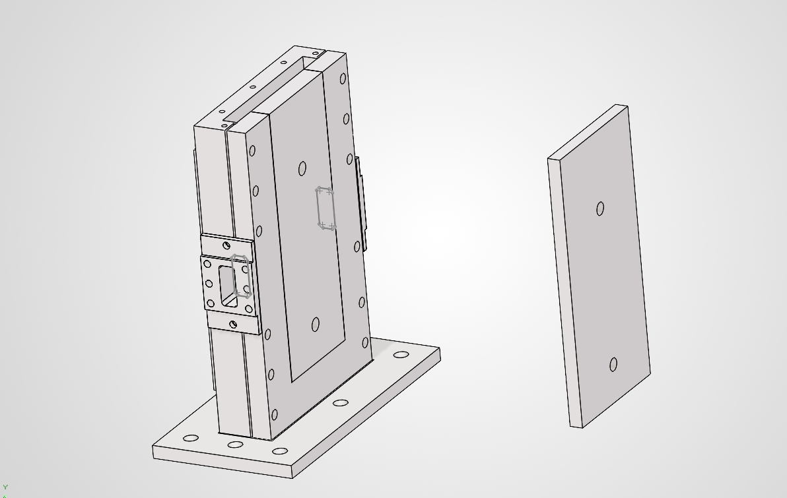
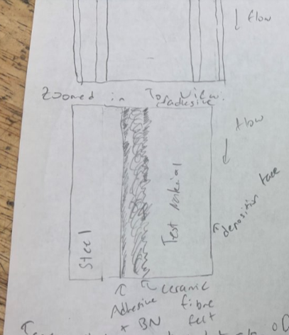
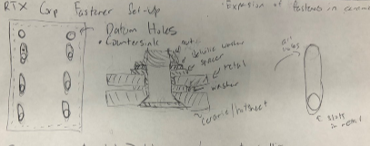

Along with my other responsibilities in the Ni Fluid Transport Lab at Johns Hopkins University, I was tasked with redesigning the test section of the facility's high-temperature wind tunnel, which is used to study high-temperature particle deposition in jet engine components. This project is ongoing, with the final goal being to construct my design and implement it into the next iteration of particle deposition tests. Attached is a slideshow giving greater depth to the project than this page provides The slideshow consists of the slides I presented to the lab once a week, detailing my design developments.
Prior to my arrival at the lab, the test section of the wind tunnel contained a removable base plate on which the particle deposition occured. However, the previous design contained a large number of fasteners, many of which galled during the tunnel's thermal cycle up to 1100°C. The tunnel also only accomodated base plates of 310S stainless steel, limiting the number of materials on which we could test the particle depostion. The aim of my project is to redesign the test section to accomodate removable base plates of various materials, such as 310S stainless steel, ceramic, and tungsten, while reducing the number of fasteners to allow for easier assembly/disassembly and minimize galling risk in future tests.
The design objectives present various challanges, such as creating a multi-material joint geometries that account for the differential thermal expansion of the various materials discussed above during thermal cycling up to 1100°C. The extreme temperature change eliminates standard fastener stacks and mechanical clamping mechanisms from design possibilites. Additionally, the top edge of the base plate (corresponding to the air-flow direction) must remain flush with the surrounding tunnel (having a gap no larger than 0.005") to prevent boundary-layer tripping. The broader structural dimensions of the test section could also not change greatly so that the section would still fit inside the customized insulation that the lab already possessed.
After considerable research and brainstorming, I settled on creating a 310S stainless steel wedge (which would slide in and out of the broader test section) that would be attached to a thin, removable base plate of the desired material.
As for fastening the removable base plate to the wedge, I settled on two main design ides: an adhesive design similar to that used by NASA heat-shield insulation systems for the space shuttle program, and a pin-slot fastener design
patented by RTX Corp in ... I then modified the design concepts found in these resources to fit the test section design, accounting for the manufacturability of the stainless steel and ceramic components and my design specifications.
  
Before choosing and finalizing a design, I developed a test procedure to verify that the concepts presented above remained true. Here is a link to the procedure. The main focus of the adhesive test was proof of concept; I needed to see if the design would fail due to shear stresses. The focus of the fastener experiment was to see if the system truly forced the the expansion away from the top edge of the base plate without causing the material with the lower coefficient of thermal expansion to fracture. The adhesive test required a much simpler set-up, whereas the fastener test required a camera system to track the top edge displacement through the thermal cycling. I designed the camera set-up to be compatible with a 2D or stereo-DIC system in case I wished to later create a strain map of the material.